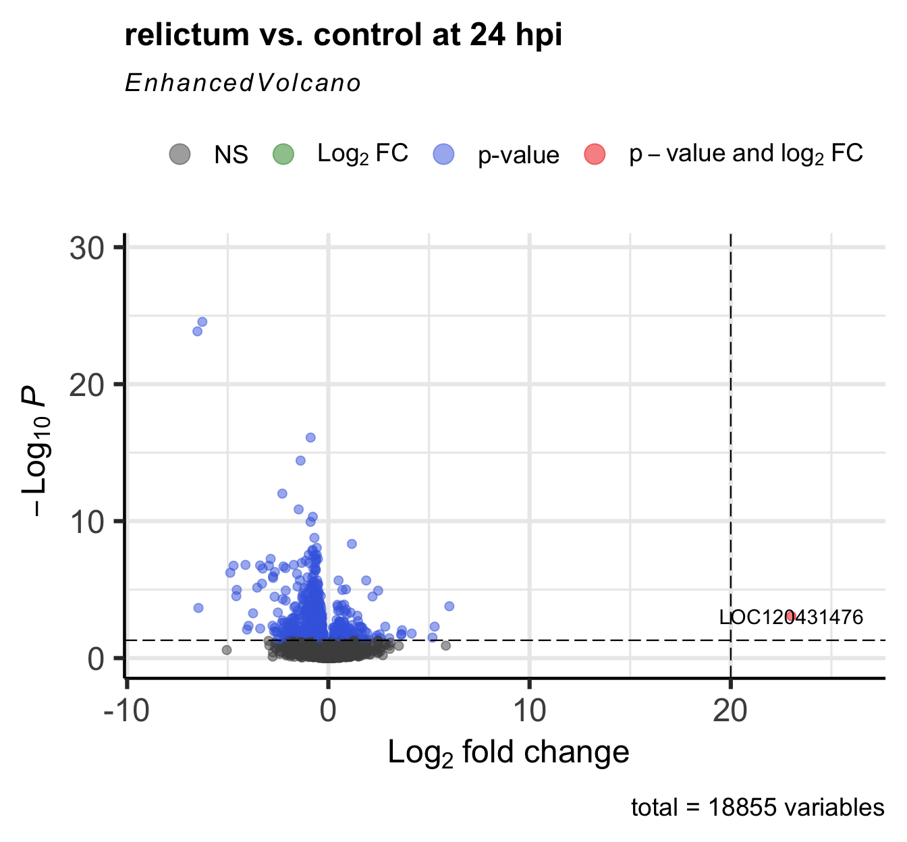

custom_library <- "/fs/scratch/PAS2250/ENT6703/share/rlib"
library(withr, lib.loc = custom_library)
library(tidyr, lib.loc = custom_library)
library(tidyverse, lib.loc = custom_library) # Misc. data manipulation and plotting
library(DESeq2, lib.loc = custom_library) # Differential expression analysis
library(EnhancedVolcano, lib.loc = custom_library) # Volcano plot
library(pheatmap, lib.loc = custom_library) # Heatmap plotWeek 4 lab: RNA-seq differential expression analysis
1 Introduction
Last week, you explored the RNA-seq reads from the 2023 Molecular Ecology paper “Two avian Plasmodium species trigger different transcriptional responses on their vector Culex pipiens”, as well as the Culex pipiens reference genome files.
In yesterday’s lecture, you learned about the steps to generate a gene count table from this input data (FASTQ reads + reference genome files), but as mentioned, we will not go through those steps ourselves.
Instead, I have generated a gene count table for you, and we will now be doing differential expression analysis in R, using the popular DESeq2 package (paper, website).
2 Getting set up
2.1 Start an RStudio session at OSC
Log in to OSC at https://ondemand.osc.edu
Click on
Interactive Apps(top bar) and thenRStudio Server(all the way at the bottom)Fill out the form as follows:
- Cluster:
Pitzer - R version:
4.3.0 - Project:
PAS2250 - Number of hours:
4 - Node type:
any - Number of cores:
2
- Cluster:
Click to see a screenshot

Click the big blue
Launchbutton at the bottomNow, you should be sent to a new page with a box at the top for your RStudio Server “job”, which should initially be “Queued” (waiting to start).
Click to see a screenshot

- Your job should start running very soon, with the top bar of the box turning green and saying “Running”.
Click to see a screenshot

- Click
Connect to RStudio Serverat the bottom of the box, and an RStudio Server instance will open in a new browser tab. You’re ready to go!
2.2 Change two settings
First, we’ll prevent R from saving your “Workspace”:
- Click
Tools(top bar, below your browser’s address bar) >Global Options - In the pop-up window (stay on the
Generaltab), change the settings under the “Workspace” heading to:

Why are we doing this? (Click to expand)
In short, the default behavior of saving and restoring your “Workspace”, which are all the items (objects) that you create during an R session, is bad practice. Instead, you should recreate your environment from a script and/or saved files with individual pieces of data, as we’ll do today.
Second, we’ll “update” our pipe symbol from %>% (the magrittr pipe that requires a package to work) to |> (the new base R pipe that does not require a package):
- Again click
Tools>Global Options(you may still be there) - Now go to
Codetab in the side panel on the left, and check the box forUse native pipe operator, |> (requires R 4.1+) - Click
OKat the bottom of the pop-up window

2.3 Create a new RStudio Project
Using an “RStudio Project” will most of all help to make sure your working directory in R is correct.
To create a new RStudio Project inside your personal dir in /fs/scratch/PAS2250/ENT6703:
- Click
File(top bar, below your browser’s address bar) >New Project - In the popup window, click
Existing Directory.
Click to see a screenshot

- Click
Browse...to select your personal dir.
Click to see a screenshot

- In the next window, you should be in your Home directory (abbreviated as
~), from which you can’t click your way to/fs/scratch! Instead, you’ll first have to click on the (very small!)...highlighted in the screenshot below:

- Type at least part of the path to your personal dir (which is in
/fs/scratch/PAS2250/ENT6703), e.g. as shown below, and clickOK:

- Now you should be able to browse/click the rest of the way to your personal directory.
- Click
Chooseto pick your selected directory. - Click
Create Project.
2.4 Create an R script
We’re going to write all our code in an R script instead of typing it directly in the console. This helps us to keep track of what we’ve been doing, especially in the longer run, and to be able to re-run our code after modifying input data or one of the lines of code.
Create and open a new R script by clicking File (top menu bar) > New File > R Script.
Save this new script right away by clicking File > Save As, then click New Folder and create a folder named “scripts”. Inside that folder, save the script with a name like lab4_DE.R (the extension for R scripts is .R).
Make sure to type all the R code below inside your script, and then send it to the console from there.
You can send code to the console by pressing Ctrl + Enter on Windows, or Cmd + Return on a Mac.
2.5 Load the necessary packages
In R, we need to use “packages” (basically, add-ons) to perform specialized tasks like differential expression analysis1. This is quite straightforward in principle, but at OSC, there can be some hickups and at the very least, it will take much longer to install packages than on your own computer2.
I have therefore created a “library” (a directory with a collection of packages) for you — you can load the packages from that library, without needing to install them yourself. Type the code below in your R script and send it to the R console:
2.6 Define our input files
For the differential expression analysis, we have the following input files:
- Metadata table — The metadata we saw last week, to enable between-treatment comparisons
- Gene counts table — Produced by running the nf-core rnaseq workflow on the input data we saw last week
count_table_file <- "../share/results/counts/salmon.merged.gene_counts_length_scaled.tsv"
metadata_file <- "../share/data/meta/metadata.tsv"3 Create a DESeq2 object
The DESeq2 package has its own “object type” (format) and before we can do anything else, we need to create a DESeq2 object from three components:
- Metadata
We should have all of our independent variables in columns in the metadata, which will allow DESeq2 to compare groups of samples - Count table
DESeq2 will of course need gene counts for its analysis. This table has one row per gene, and one column per sample. The sample IDs in the column names should match with those in the metadata. - A statistical design
Instead of telling DESeq2 about the statistical design (i.e., which groups to compare) on the fly when we run the analysis, we need to include this information in the object itself.
3.1 Metadata
First, we’ll load the metadata file and take a look at the resulting dataframe:
# Read in the count table
meta_raw <- read_tsv(metadata_file, show_col_types = FALSE)# Take a look at the first 6 rows
head(meta_raw)Click to see the result
# A tibble: 6 × 3
sample_id time treatment
<chr> <chr> <chr>
1 ERR10802882 10dpi cathemerium
2 ERR10802875 10dpi cathemerium
3 ERR10802879 10dpi cathemerium
4 ERR10802883 10dpi cathemerium
5 ERR10802878 10dpi control
6 ERR10802884 10dpi control We’ll make sure the data frame is sorted by sample ID, and that the sample IDs are contained in “row names”:
meta <- meta_raw |>
# Sort by the 'sample_id' column
arrange(sample_id) |>
# Turn the 'sample_id' column into row names:
column_to_rownames("sample_id") |>
# Turn the 'time' and 'treatment' columns into "factors":
mutate(time = factor(time, levels = c("24hpi", "10dpi")),
treatment = factor(treatment, levels = c("control", "cathemerium", "relictum")))head(meta)Click to see the result
time treatment
ERR10802863 24hpi control
ERR10802864 24hpi cathemerium
ERR10802865 24hpi relictum
ERR10802866 24hpi control
ERR10802867 24hpi cathemerium
ERR10802868 24hpi relictumWe changed the two columns with the independent variables (time and treatment) into factors, because DESEq2 wants this — and this also allowed us to use a custom, non-alphanumeric ordering where 24hpi comes before 10dpi:
head(meta$time)[1] 24hpi 24hpi 24hpi 24hpi 24hpi 24hpi
Levels: 24hpi 10dpi3.2 Count table
Second, we will load the count table into R:
# Read in the count table
count_df <- read_tsv(count_table_file, show_col_types = FALSE)# Take a look at the first 6 rows
head(count_df)Click to see the result
# A tibble: 6 × 24
gene_id gene_name ERR10802863 ERR10802864 ERR10802865 ERR10802866 ERR10802867
<chr> <chr> <dbl> <dbl> <dbl> <dbl> <dbl>
1 ATP6 ATP6 10275. 8255. 4103. 18615. 11625.
2 ATP8 ATP8 3.85 2.92 2.33 7.76 7.01
3 COX1 COX1 88041. 83394. 36975. 136054. 130863.
4 COX2 COX2 8749. 7925. 2901. 16802. 10026.
5 COX3 COX3 55772. 50312. 35074. 80510. 69850.
6 CYTB CYTB 38543. 36352. 22185. 62147. 57461.
# ℹ 17 more variables: ERR10802868 <dbl>, ERR10802869 <dbl>, ERR10802870 <dbl>,
# ERR10802871 <dbl>, ERR10802874 <dbl>, ERR10802875 <dbl>, ERR10802876 <dbl>,
# ERR10802877 <dbl>, ERR10802878 <dbl>, ERR10802879 <dbl>, ERR10802880 <dbl>,
# ERR10802881 <dbl>, ERR10802882 <dbl>, ERR10802883 <dbl>, ERR10802884 <dbl>,
# ERR10802885 <dbl>, ERR10802886 <dbl>We next have to make several modifications, because DESeq2 expects an all-numeric matrix with whole numbers (integers) and gene IDs are “row names” rather than as a separate column:
# Prepare the count table so it can be loaded into DESeq2
count_mat <- count_df |>
# Turn the 'gene_id' column into row names:
column_to_rownames("gene_id") |>
# Remove a remaining non-numeric column, with gene names:
select(-gene_name) |>
# We should round everything to whole numbers:
round() |>
# We should convert it to a formal matrix format:
as.matrix()# Take a look at the first 6 rows
head(count_mat)Click to see the result
ERR10802863 ERR10802864 ERR10802865 ERR10802866 ERR10802867 ERR10802868
ATP6 10275 8255 4103 18615 11625 7967
ATP8 4 3 2 8 7 2
COX1 88041 83394 36975 136054 130863 62279
COX2 8749 7925 2901 16802 10026 6701
COX3 55772 50312 35074 80510 69850 42478
CYTB 38543 36352 22185 62147 57461 28159
ERR10802869 ERR10802870 ERR10802871 ERR10802874 ERR10802875 ERR10802876
ATP6 12788 4408 13648 13834 1346 10032
ATP8 2 0 2 1 3 2
COX1 109596 106402 104394 77682 38276 78290
COX2 11494 6603 11151 9893 1473 13146
COX3 68228 71945 66900 52368 14665 37275
CYTB 46219 52035 46090 35247 17449 38762
ERR10802877 ERR10802878 ERR10802879 ERR10802880 ERR10802881 ERR10802882
ATP6 987 1834 3337 5036 1983 11586
ATP8 0 0 0 3 0 27
COX1 17785 32099 64490 63960 50965 76113
COX2 1141 1907 3439 8334 2063 12752
COX3 8797 15948 26278 29997 17802 35419
CYTB 11177 22262 34368 33401 25854 43912
ERR10802883 ERR10802884 ERR10802885 ERR10802886
ATP6 18821 2792 11749 6682
ATP8 40 0 8 1
COX1 108343 65829 107741 94682
COX2 19148 2713 17947 10656
COX3 51441 24915 50029 47750
CYTB 57844 34616 50587 51198Check that the sample IDs match
When creating the DESeq2 object, DESeq2 assumes that sample IDs in both tables match and are provided in the same order. Let’s make sure this is indeed the case:
all(row.names(meta) == colnames(count_mat))[1] TRUE3.3 Create the DESeq2 object
We will create the DESeq2 object using the function DESeqDataSetFromMatrix(), which we will provide with three arguments corresponding to the components discussed above:
- The metadata with argument
colData. - The count data with argument
countData. - The statistical design for the DE analysis with argument
design. For now, we will specify~1, which effectively means “no design” — we will change this before the actual DE analysis.
dds <- DESeqDataSetFromMatrix(colData = meta, countData = count_mat, design = ~ 1)converting counts to integer modeBefore we will run the differential expression analysis, though, we will do a bit of exploratory data analysis.
4 Exploratory Data Analysis
4.1 Our count matrix
What are number of rows and columns of the count matrix?
dim(count_mat)[1] 18855 22How many genes have non-zero counts?
dim(count_mat[rowSums(count_mat) > 0, ])[1] 17788 22Your Turn: How many genes have total counts of at least 10? (Click to see the solution)
dim(count_mat[rowSums(count_mat) >= 10, ])[1] 16682 22How are counts distributed across samples? That is, we would like a sum of counts for each column:
colSums(count_mat)ERR10802863 ERR10802864 ERR10802865 ERR10802866 ERR10802867 ERR10802868
24297245 17177436 22745445 26849403 21471477 17506262
ERR10802869 ERR10802870 ERR10802871 ERR10802874 ERR10802875 ERR10802876
24299398 25490128 26534405 22194841 18927885 28804150
ERR10802877 ERR10802878 ERR10802879 ERR10802880 ERR10802881 ERR10802882
9498249 14807513 20667093 23107463 17545375 19088206
ERR10802883 ERR10802884 ERR10802885 ERR10802886
21418234 19420046 24367372 25452228 Your Turn: That’s not that easy to read / interpret. Can you instead get these numbers in millions, rounded to whole numbers, and sorted? (Click to see the solution)
sort(round(colSums(count_mat) / 1000000))ERR10802877 ERR10802878 ERR10802864 ERR10802868 ERR10802881 ERR10802875
9 15 17 18 18 19
ERR10802882 ERR10802884 ERR10802867 ERR10802879 ERR10802883 ERR10802874
19 19 21 21 21 22
ERR10802865 ERR10802880 ERR10802863 ERR10802869 ERR10802885 ERR10802870
23 23 24 24 24 25
ERR10802886 ERR10802866 ERR10802871 ERR10802876
25 27 27 29 We can also simply print the dds object, which will give a summary of its contents:
ddsclass: DESeqDataSet
dim: 18855 22
metadata(1): version
assays(1): counts
rownames(18855): ATP6 ATP8 ... unassigned_gene_8 unassigned_gene_9
rowData names(0):
colnames(22): ERR10802863 ERR10802864 ... ERR10802885 ERR10802886
colData names(2): time treatmentBonus section: Histograms of gene counts (Click to expand)
To plot a histogram of mean gene counts across samples, we’ll first create a data frame with these mean gene counts:
mean_counts <- rowSums(count_mat) / ncol(count_mat)
mean_counts_df <- data.frame(mean_counts) |>
rownames_to_column("gene_id")Now we can make the histogram:
ggplot(mean_counts_df, aes(x = mean_counts)) +
geom_histogram() +
scale_y_log10() +
theme_minimal()`stat_bin()` using `bins = 30`. Pick better value with `binwidth`.Warning: Transformation introduced infinite values in continuous y-axisWarning: Removed 19 rows containing missing values (`geom_bar()`).Zoom in a bit:
ggplot(mean_counts_df, aes(x = mean_counts)) +
geom_histogram() +
scale_y_log10() +
scale_x_continuous(limits = c(0, 100000)) +
theme_minimal()`stat_bin()` using `bins = 30`. Pick better value with `binwidth`.Warning: Removed 7 rows containing non-finite values (`stat_bin()`).Warning: Transformation introduced infinite values in continuous y-axisWarning: Removed 6 rows containing missing values (`geom_bar()`).
Which genes have the highest counts?
sort(rowSums(count_mat) / ncol(count_mat), decreasing = TRUE)[1:10] LOC120426760 unassigned_gene_22 LOC120413044 LOC120419254
645940.86 552075.86 233832.14 171938.27
LOC120413042 LOC120425410 LOC120418794 LOC120415720
154915.68 105133.50 101350.32 99153.86
LOC120422638 LOC120413219
98092.05 89276.14 4.2 Principal Component Analysis (PCA)
We will not run a Principal Component Analysis (PCA) to look for overall patterns of (dis)similarity among our samples. This will help us answer questions like:
- Do the samples cluster by treatment (infection status) and/or timepoint?
- Which of these two variables has a greater effect on overall levels of gene expression?
- Is there an overall interaction between these two variables?
First, we will have to normalize the count data to have even sampling across samples (with respect to “library size”, total number of reads per sample) and approximately even variance:
dds_vst <- varianceStabilizingTransformation(dds)
The authors of the study did this as well:
We carried out a Variance Stabilizing Transformation (VST) of the counts to represent the samples on a PCA plot.
Next, we run and plot the PCA with a single function call, plotPCA from DESeq2 (the ntop argument refers to the top number of most variable genes to use for the PCA):
plotPCA(dds_vst, ntop = 500, intgroup = c("time", "treatment"))Click to see the plot

How does this compare to the PCA plot in the paper (their Fig. 1)?
Your Turn: Try to answer the three questions asked at the beginning of this PCA section. (Click to see the solution)
Bonus Exercise: Compare the plot with different values for ntop
Bonus Section: Customizing the PCA plot (Click to expand)
We’ll do some customization to make the plot look better. The biggest issue (I think) with the above plot is that each combination of time point and treatment has a distinct color — it would be better to use point colors only to distinguish one of the variables, and point shape to distinguish the others (this is also how it was done in the paper’s Fig. 1).
First, if we use
pca_df <- plotPCA(dds_vst, ntop = 500, intgroup = c("time", "treatment"), returnData = TRUE)We’ll extract the percentage of variance explained by different principal components, so we can later add this information to the plot:
pct_var <- round(100 * attr(pca_df, "percentVar"), 1)
pct_var[1] 85.3 3.1ggplot(pca_df,
aes(x = PC1, y = PC2, color = treatment, shape = time)) +
geom_point(size = 5) +
labs(x = paste0("PC1 (", pct_var[1], "%)"),
y = paste0("PC2 (", pct_var[2], "%)")) +
scale_color_brewer(palette = "Dark2", name = "Infection status") +
scale_shape(name = "Time points") +
coord_fixed() +
theme_bw() +
theme(panel.grid.minor = element_blank())
5 Differential Expression (DE) analysis
5.1 Figuring out how to do the analysis
First, let’s see how the DE analysis was done in the paper:
Then, we used the DESeq2 package (Love et al., 2014) to perform the differential gene expression analysis comparing: (i) P. relictum-infected mosquitoes vs. controls, (ii) P. cathemerium-infected mosquitoes vs. controls, and (iii) P. relictum-infected mosquitoes vs. P. cathemerium-infected mosquitoes.
This is not terribly detailed and could be interpreted in a couple of different ways. For example, they may have compared infection statuses by ignoring time points or by controlling for time points (and their are different ways to do the latter).
Ignoring time would mean analyzing the full dataset (all time points) while only using the infection status as an independent variable, i.e. the design ~treatment.
Your Turn: Given the PCA results, do you think that ignoring time is a good idea? (Click to see the solution)
Nope!
Controlling for time can additionally be done in two ways:
- A two-factor analysis:
~ time + treatment - Pairwise comparisons between each combination of time and treatment (we’ll see below how we can do that)
If we take a look at Table 1 with the DE results, it will become clearer how they did their analysis:

It looks like they performed pairwise comparisons between each combination of time and treatment. But this can in turn be done in two ways with DESeq2:
- After subsetting the dataset to each combination of time and treatment.
- After creating a single independent variable that is a combination of time and treatment.
The latter method is the more common one, and is what we will do below3.
5.2 Setting the statistical design
As discussed above, we will now create a new variable that is a combination of treatment and time, and we’ll call it group:
# Create a combined variable called 'group':
dds$group <- factor(paste(dds$treatment, dds$time, sep = "_"))
# Which unique values does 'group' have, and how many samples are in each?
table(dds$group)
cathemerium_10dpi cathemerium_24hpi control_10dpi control_24hpi
4 3 4 3
relictum_10dpi relictum_24hpi
4 4 Next, we set the analysis design:
design(dds) <- ~ groupNow we’re ready to run the DE analysis!
5.3 Running the DE analysis
We perform the differential expression analysis with the DEseq() function:
dds <- DESeq(dds)estimating size factorsestimating dispersionsgene-wise dispersion estimatesmean-dispersion relationshipfinal dispersion estimatesfitting model and testing
Tip
Note that we above, we assigned the output back to the dds object — in this case, the DE results are being added to the object!
The DESeq() function is a wrapper that performs three steps (functions) consecutively:
estimateSizeFactors()— “Normalization” by library size and composition.estimateDispersions()— Estimate gene-wise dispersion (variance in counts).nbinomWaldTest(ddsObj)— Fit the negative binomial GLM and calculate Wald statistics, which is the test statistic underlying the DE p-value.
More about gene count normalization
Note that DESeq2 doesn’t actually normalize the counts in the sense that it produces a matrix with adjusted counts. Instead it uses raw counts and includes the size factors in the modeling. To learn more about gene count normalization, see this video and this page.
6 Extracting the DE results
A key thing to understand is that DESeq2 has automatically performed pairwise comparisons between each of the (6) levels of the group variable.
As such, we can extract a separate table with gene-wise results for each of these (15) pairwise comparisons. Or put differently, for any individual gene, it tested whether this gene is differentially expressed separately for each of the pairwise comparisons.
6.1 The results table
We can extract the results for one pairwise comparison (which DESeq2 refers to as a contrast) at a time, by specifying it with the contrast argument as a vector of length 3:
- The focal independent variable (here,
group) - The first (reference) level of the independent variable (in the example below,
relictum_24hpi) - The second level of the independent variable (in the example below,
control_24hpi)
res_rc24 <- results(dds, contrast = c("group", "relictum_24hpi", "control_24hpi"))
head(res_rc24)log2 fold change (MLE): group relictum_24hpi vs control_24hpi
Wald test p-value: group relictum_24hpi vs control_24hpi
DataFrame with 6 rows and 6 columns
baseMean log2FoldChange lfcSE stat pvalue padj
<numeric> <numeric> <numeric> <numeric> <numeric> <numeric>
ATP6 7658.0445 -0.416305 0.609133 -0.683438 0.4943300 0.776172
ATP8 4.9196 -1.311116 1.388811 -0.944057 0.3451406 NA
COX1 75166.8670 -0.590935 0.282075 -2.094958 0.0361747 0.208045
COX2 7807.1848 -0.610152 0.578401 -1.054893 0.2914743 0.615249
COX3 41037.7359 -0.400173 0.251760 -1.589498 0.1119479 0.388880
CYTB 36916.6130 -0.501653 0.261927 -1.915242 0.0554617 0.266528What do the columns in this table contain?
baseMean: Mean expression level across all samples.log2FoldChange: The “log2-fold change” of gene counts between the compared levels.lfcSE: The uncertainty in terms of the standard error (SE) of the log2-fold change estimate.stat: The value for the Wald test’s test statistic.pvalue: The uncorrected p-value from the Wald test.padj: The multiple-testing corrected p-value (i.e., adjusted p-value).
Log2-fold changes
Log2-fold changes are the standard way of representing the effect size of expression level differences between two groups of interest.
A log2-fold change of 1 indicates that the expression in the reference level is two-fold lower than that of the other level, a log2-fold change of 2 indicates a four-fold difference, a log2-fold change of 3 indicates an eight-fold difference, and so on.
Similarly, negative log2-fold values indicate a change in gene counts in the other direction: the reference level is higher than the other level.
Multiple testing correction
Because we are testing significance for many genes, we need to correct for multiple testing. DESeq2 uses the Benjamini-Hochberg False Discovery Rate (FDR) correction.
For more info, see: STATQUEST
How many adjusted p-values were less than 0.05?
sum(res_rc24$padj < 0.05, na.rm = TRUE)[1] 801So, we have 801 Differentially Expressed Genes (DEGs) for this specific pairwise comparison.
How does that compare to what they found in the paper?
Your Turn: The paper’s Table 1 also reports numbers of up- and downregulated genes separately. Can you find this out for our DEGs? (Click to see the solution)
Your Turn: The paper’s Table 1 also reports the number of DEGs with an absolute log2-fold change greater than 1. Can you find this out for our DEGs? (Click to see the solution)
Your Turn: Extract the results for one or more other contrasts that are the paper’s Table 1, and compare the results.
Bonus section: NA values in the results table (Click to expand)
Some values in the results table can be set to NA for one of the following reasons:
If a gene contains a sample with a count outlier, both the p-value and adjusted p-value will be set to
NA. (DESeq2 performs outlier detection using Cook’s distance.)If all samples have zero counts for a given gene, the
baseMeancolumn will be zero, and the log2-fold change estimates, p-value and adjusted p-value will all be set toNA.DESeq2 also automatically filters genes with a low mean count in the sense that it does not include them in the multiple testing correction. Therefore, in such cases, the p-value will not be
NA, but the adjusted p-value will be.Because we have very low power to detect differential expression for such low-count genes, it is beneficial to remove them prior to the multiple testing correction: that way, the correction becomes less severe for the remaining genes.
Let’s see how many genes have NA p-values:
# Number of genes with NA p-value:
sum(is.na(res_rc24$pvalue))[1] 1124# As a proportion of the total number of genes in the test:
sum(is.na(res_rc24$pvalue)) / nrow(res_rc24)[1] 0.05961283And NA adjusted p-values:
# Number of genes with NA p-value:
sum(is.na(res_rc24$padj))[1] 7283# As a proportion of the total number of genes in the test:
sum(is.na(res_rc24$padj)) / nrow(res_rc24)[1] 0.3862636Bonus section: Exporting the results (Click to expand)
You may be wondering how we can save the DE results tables:
# Create the output directory, if necessary:
dir.create("results/DE", recursive = TRUE, showWarnings = FALSE)
# Write the
write_tsv(as.data.frame(res_rc24), "results/DE/resultsres_rc24.tsv")7 Visualizing the DE results
We will create a few plots for the results for the relictum_24hpi vs. control_24hpi comparison, which we extracted above.
7.1 Volcano plot
For a nice overview of the results, we can plot a so-called “volcano plot” using the EnhancedVolcano() function from the package of the same name (see here for a “vignette” / tutorial):
EnhancedVolcano(
toptable = res_rc24, # DESeq2 results to plot
title = "relictum vs. control at 24 hpi",
x = "log2FoldChange", # Plot the log2-fold change along the x-axis
y = "pvalue", # Plot the p-value along the y-axis
lab = rownames(res_rc24), # Use the rownames for the gene labels (though see below)
labSize = 0 # Omit gene labels
)Click to see the plot
Plot customization ideas
Above, we turned the gene labeling off by setting labSize = 0 — the default p-value cut-off for point labeling is 1e-5 (and the default log2-fold change cut-off is 1): in this case, that would get quite busy with gene labels. We might want to try a plot with a stricter p-value cut-off that does show the gene labels.
Some further ideas for potential customization:
- We might want to get rid of the subtitle (“EnhancedVolcano”) and the caption (“total=…”).
- Perhaps you want to exclude the outlier with the >20 log2-fold change.
- Conversely, you might want to label the abovementioned outlier.
- You might want to try some other options you see in this vignette or the help page which you can access by running
?EnhancedVolcano.
Your Turn: Consider some of the ideas above and customize the plot (Click for an example)
EnhancedVolcano(
toptable = res_rc24,
title = "relictum vs. control at 24 hpi",
x = "log2FoldChange",
y = "pvalue",
lab = rownames(res_rc24),
labSize = 3, # Now we will show the gene labels
pCutoff = 10e-10, # Modify the p-value cut-off
subtitle = NULL, # Remove the subtitle
caption = NULL, # Remove the caption
)
Your Turn: Figure out the identity of the abovementioned log2-fold change outlier either by labeling it in the plot, or by filtering the res_rc24 table (Click for the solution)
- By labeling it in the plot:
EnhancedVolcano(
toptable = res_rc24,
title = "relictum vs. control at 24 hpi",
x = "log2FoldChange",
y = "pvalue",
lab = rownames(res_rc24),
labSize = 3,
pCutoff = 10e-4, # Modify the p-value cut-off
FCcutoff = 20,
)Warning: Removed 1 rows containing missing values (`geom_vline()`).
- By filtering the results table:
as.data.frame(res_rc24) |> filter(log2FoldChange > 20) baseMean log2FoldChange lfcSE stat pvalue
LOC120413430 7.540043 24.46898 5.397990 4.532979 NA
LOC120431476 39.720375 23.01445 5.301369 4.341228 1.416886e-05
padj
LOC120413430 NA
LOC120431476 0.00085843987.2 Plot specific genes
We can also create plots of expression levels for individual genes. That is especially interesting for genes with highly significant differential expression. So let’s plot the most highly significant DEG.
First, let’s create a vector with most highly signifant DEGs, which we’ll use again for the heatmap below.
top25_DE <- row.names(res_rc24[order(res_rc24$padj)[1:20], ])
top25_DE [1] "LOC120423768" "LOC120423767" "LOC120414587" "LOC128092307" "LOC120431154"
[6] "LOC120427827" "LOC120415152" "LOC120422735" "LOC120431739" "LOC120431733"
[11] "LOC120428214" "LOC120427588" "LOC120415540" "LOC120415522" "LOC120429000"
[16] "LOC120414889" "LOC120413491" "LOC120414802" "LOC120423826" "LOC120429211"DESeq2 has a plotting function but the plot is not very good. We will still use that function to quickly extract the counts for our gene of interest in the right format for plotting, using returnData = TRUE (which will also make it omit the plot):
focal_gene_counts <- plotCounts(
dds,
gene = top25_DE[1],
intgroup = c("time", "treatment"),
returnData = TRUE
)head(focal_gene_counts)Click to see the result
count time treatment
ERR10802863 1543.81532 24hpi control
ERR10802864 2279.03704 24hpi cathemerium
ERR10802865 25.42295 24hpi relictum
ERR10802866 1105.75009 24hpi control
ERR10802867 1199.28425 24hpi cathemerium
ERR10802868 32.14394 24hpi relictumNow we can make the plot:
ggplot(focal_gene_counts, aes(x = treatment, y = count, fill = treatment)) +
geom_boxplot(alpha = 0.5, outlier.shape = NA) +
geom_point(size = 4, shape = 21, position = position_jitter(w = 0.1, h = 0)) +
facet_wrap(vars(time)) +
theme_bw() +
theme(legend.position = "none")Click to see the plot

Your Turn: Plot the gene with the very high log-fold change value that we saw when making the volcano plot. (Click for the solution)
focal_gene_counts <- plotCounts(
dds,
gene = "LOC120431476",
intgroup = c("time", "treatment"),
returnData = TRUE
)
ggplot(focal_gene_counts, aes(x = treatment, y = count, fill = treatment)) +
geom_boxplot(alpha = 0.5, outlier.shape = NA) +
geom_point(size = 4, shape = 21, position = position_jitter(w = 0.1, h = 0)) +
facet_wrap(vars(time)) +
theme_bw() +
theme(legend.position = "none")
Bonus Exercise: Plot one or a few more of the top-DE genes. Do they have similar expression patterns across treatment and timepoints as the first one?
7.3 Heatmaps
We can create heatmaps with the pheatmap function. Let’s start by creating a function that will plot a heatmap given a vector of gene IDs and a DESeq2 object dds:
norm_mat <- assay(dds_vst)norm_mat_sel <- norm_mat[match(top25_DE, rownames(norm_mat)), ]
meta_sort <- meta |>
arrange(treatment, time) |>
select(treatment, time)pheatmap(norm_mat_sel,
cluster_rows = TRUE,
cluster_cols = FALSE,
show_rownames = FALSE,
annotation_col = meta_sort,
scale = "row")Click to see the plot

Your Turn: Make a heatmap with the top-25 most-highly expressed genes (Click for a hint: how to get that top-25)
top25_hi <- names(sort(rowMeans(norm_mat), decreasing = TRUE)[1:20])Click for the solution
norm_mat_sel <- norm_mat[match(top25_hi, rownames(norm_mat)), ]
meta_sort <- meta |>
arrange(treatment, time) |>
select(treatment, time)
pheatmap(norm_mat_sel,
cluster_rows = TRUE,
cluster_cols = FALSE,
show_rownames = FALSE,
annotation_col = meta_sort,
scale = "row")
8 In Closing
8.1 Next steps
Some potential next steps for this analysis are:
- Run the DE analysis for all pairwise comparisons
- Compare DEGs across pairwise (this would allow us to make the upset plot in Figure 2 of the paper)
- Perm
- Enrichment analysis